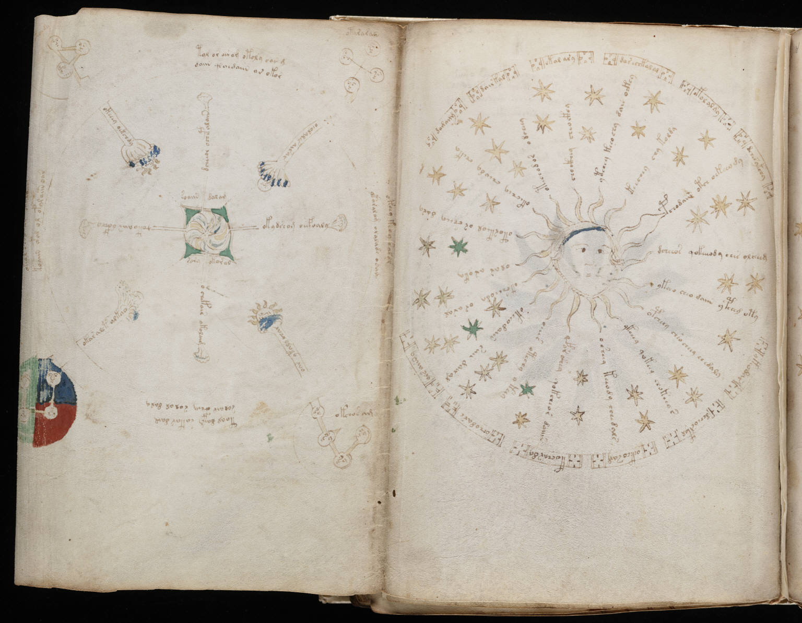

f67v1
1dch*sykchy2ykeodar3dechoekol4ockhosam5kochardy6ochodare7ols aiiny8damamm9dairkal10okal ary11dor echkolal12okolaldy13pchodais otch oekaody14dcheeos qokiiiody eees oloesdr15ykoo cheo daiin ypcheg oty16opcheey chso cheey chedaly17ykeeey qokeey chokeear18osheey keeody che dals19okor shey qokcheor doiir20oeees otechy okeey21okeeodaiin siiin dairal22oksheeoda or aral23olar aroka24otorkeol or cheey dary25okechey cheody *eoky26otechodor odreeey27chockhdy cheockhy28ytchoy kchochy dair oekey29kchcsey chy koldy
